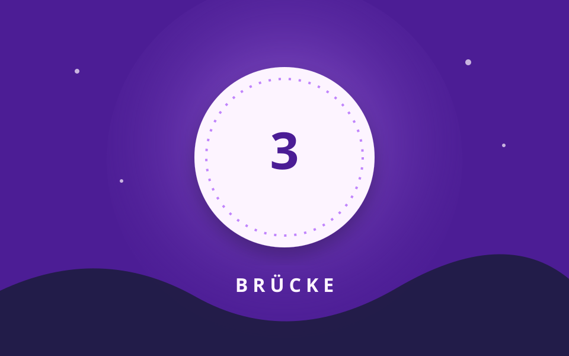

Station 3 von 5

Über dem Wasser
Ich habe einen Rücken, doch kein Gesicht. Viele gehen über mich, ich bewege mich nicht.
Eure Aufgabe
Was ist gesucht? Findet es in eurer Umgebung.
Tipp anzeigen
Es verbindet zwei Seiten miteinander.
Station 3 von 5

Ich habe einen Rücken, doch kein Gesicht. Viele gehen über mich, ich bewege mich nicht.
Was ist gesucht? Findet es in eurer Umgebung.
Es verbindet zwei Seiten miteinander.